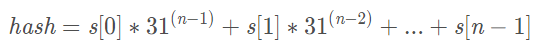
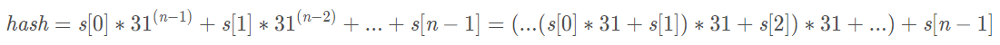
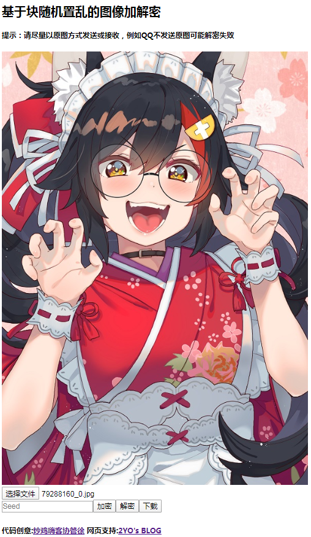
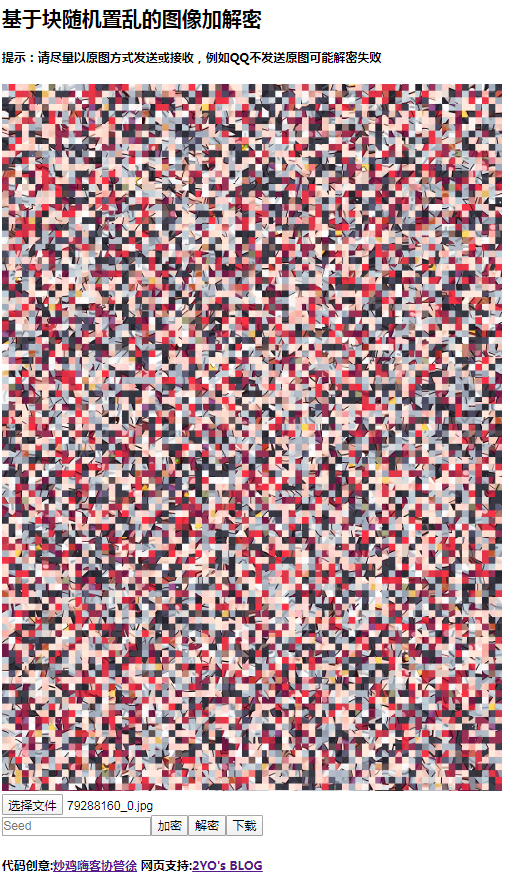

起因
前几天群友在群里发了这么一张图片：
敏锐的我在头脑中拼凑了一番发现事情并不一般，之后群里纷纷批评指责这位群友，该群友随后分享了一款APP，诸群友啧啧称奇，满意的笑了，之后就是一波分享会。不过我对这款APP的工作原理产生了兴趣，首先反编译了APP，不过可读性不是很好，功力不够看不太懂，之后去搜了一下，发现了这么一篇文章写一个微博上传图片自动加密解密工具，文章中只介绍了像素随机置乱的方法，不过在文章作者的GitHUB上实现了块随机置乱的方法。并且自己实现了一个小工具：基于块随机置乱的图像加解密
开始
随机数生成
文章作者实现的功能是微博图片的自动加解密，这里只研究涉及图片加解密的部分。我们知道随机数生成算法生成的并不是真正的随机数，而是一个伪随机数序列，当随机数种子一致时，可以生成相同的伪随机数序列。那么将将图像划分为若干个小块，按照伪随机数序列将这些小块打乱顺序，也就是加密的原理，由于相同的种子可以生成相同的伪随机数序列，那么解密时按照伪随机数序列还原这些小块的顺序就可以了。由于JS自带的Math.random()并不能自己设置随机数种子，因此文章作者把V8引擎中的随机数算法抄了过来：
// 从谷歌V8引擎抄来的 https://github.com/v8/v8/blob/dae6dfe08ba9810abbe7eee81f7c58e999ae8525/src/math.js#L144
export class Random {
constructor (seed = new Date().getTime()) {
this._setRngstate(seed)
}
// seed可以是字符串
_setRngstate (seed) {
// JS真没有好判断字符串是数字的办法
if (/^-?\d{1,10}$/.test(seed) && seed >= -0x80000000 && seed <= 0x7FFFFFFF) {
seed = parseInt(seed)
} else {
seed = this._hashCode(seed)
}
this._rngstate = [seed & 0xFFFF, seed >>> 16]
}
// 抄Java的
_hashCode (str) {
let hash = 0
// JS的字符串是UTF-16编码
for (let i = 0; i < str.length; i++) {
hash = (hash * 31 + str.charCodeAt(i)) & 0xFFFFFFFF
}
return hash
}
// 返回[0, 1)
random () {
let r0 = (Math.imul(18030, this._rngstate[0] & 0xFFFF) + (this._rngstate[0] >>> 16)) | 0
this._rngstate[0] = r0
let r1 = (Math.imul(36969, this._rngstate[1] & 0xFFFF) + (this._rngstate[1] >>> 16)) | 0
this._rngstate[1] = r1
let x = ((r0 << 16) + (r1 & 0xFFFF)) | 0
// Division by 0x100000000 through multiplication by reciprocal.
return (x < 0 ? (x + 0x100000000) : x) * 2.3283064365386962890625e-10
}
// 返回[min, max]的整数
randint (min, max) {
return Math.floor(min + this.random() * (max - min + 1))
}
}在Java中String类的hashCode()方法的算法如下：

可以看到这个式子的时间复杂度大致为O(a^n)，可以通过多项式的方式化简：

这样复杂度就降到了O(n)，31是质数，可以使分布较为均匀。读JDK的源码，可看到hashCode()的源码如下：
public int hashCode() {
int h = hash;
if (h == 0 && value.length > 0) {
char val[] = value;
for (int i = 0; i < value.length; i++) {
h = 31 * h + val[i];
}
hash = h;
}
return h;
}其中hash是一个私有实例字段，表示字符串的hash，value就是字符串，java中int类型是32位，通过自然溢出达到取模的效果。注意到javascript和java整形的取值范围不同，在java中可通过Integer.MAX_VALUE和Integer.MIN_VALUE获取最大最小值，分别为2147483647和-2147483648，在javascript中可通过Number.MAX_SAFE_INTEGER和Number.MIN_SAFE_INTEGER获取最大最小值，分别为9007199254740991和-9007199254740991，因此在javascript中不能直接照抄java的代码，这就是位与0xFFFFFFFF的含义，丢弃高位，保留低32位，另外在java中字符串gdejicbegh和hgebcijedg有相同的hash值-801038016，并且他们具有reverse的关系。
洗牌算法的实现
顾名思义，洗牌算法就是将数组中的元素打乱，打乱之后我们就得到了一个不重复的随机序列。
// 生成[0, length)的随机序列，每次调用next()返回和之前不重复的值，直到[0, length)用完
export class RandomSequence {
constructor (length, seed) {
this._rng = new Random(seed)
this._list = new Array(length)
for (let i = 0; i < length; i++) {
this._list[i] = i
}
this._nextMin = 0
}
next () {
if (this._nextMin >= this._list.length) {
this._nextMin = 0
}
let index = this._rng.randint(this._nextMin, this._list.length - 1)
let result = this._list[index]
this._list[index] = this._list[this._nextMin]
this._list[this._nextMin] = result
this._nextMin++
return result
}
}这段代码十分巧妙，果然读大佬的代码都是赏心悦目，算法的思想是先生成一个元素为从0到length的数组，生成_nextMin到length-1之间的随机数index，之后每次将下标为_nextMin和index的两个元素交换，时间复杂度为O(n)，有些人可能会问：为什么搞这么复杂，直接生成随机数，然后判重，若重复了再生成，直到凑够length个元素不行吗？这样由于每次要判重，复杂度肯定是大于O(n)的。
加密算法的实现
这段代码最关键的部分就是将JPEG图片分为8X8小块，是由于JPEG是在8x8小块中压缩图像的，至于为什么是8x8，查了一下资料，有以下两条原因，可能不太准确：
1.任何尺寸大于8 X 8的矩阵更难以进行数学运算（如变换等）不支持硬件或需要更长的时间。
2.任何大小小于8 X 8的矩阵都没有足够的信息来与管道一起继续。
class Codec {
constructor (imgData) {
this._imgData = imgData
}
// 加密，返回加密后的imgData
encrypt () {}
// 解密，返回解密后的imgData
decrypt () {}
}
// 块随机置乱
// 由于JPEG是分成8x8的块在块内压缩，分成8x8块处理可以避免压缩再解密造成的高频噪声
class ShuffleBlockCodec extends Codec {
encrypt () {
return this._doCommon((result, blockX, blockY, newBlockX, newBlockY) =>
this._copyBlock(result, newBlockX, newBlockY, this._imgData, blockX, blockY)
)
}
decrypt () {
return this._doCommon((result, blockX, blockY, newBlockX, newBlockY) =>
this._copyBlock(result, blockX, blockY, this._imgData, newBlockX, newBlockY)
)
}
_doCommon (handleCopy) {
// 尺寸不是8的倍数则去掉边界
let blockWidth = Math.floor(this._imgData.width / 8)
let blockHeight = Math.floor(this._imgData.height / 8)
let result = ctx.createImageData(blockWidth * 8, blockHeight * 8)
let seq = new RandomSequence(blockWidth * blockHeight, getConfig().randomSeed)
for (let blockY = 0; blockY < blockHeight; blockY++) {
for (let blockX = 0; blockX < blockWidth; blockX++) {
let index = seq.next()
let newBlockX = index % blockWidth
let newBlockY = Math.floor(index / blockWidth)
handleCopy(result, blockX, blockY, newBlockX, newBlockY)
}
}
return result
}
_copyBlock (dstImgData, dstBlockX, dstBlockY, srcImgData, srcBlockX, srcBlockY) {
let iDstStart = (dstBlockY * dstImgData.width + dstBlockX) * 8 * 4
let iSrcStart = (srcBlockY * srcImgData.width + srcBlockX) * 8 * 4
for (let y = 0; y < 8; y++) {
for (let i = 0; i < 8 * 4; i++) {
dstImgData.data[iDstStart + i] = srcImgData.data[iSrcStart + i]
}
iDstStart += dstImgData.width * 4
iSrcStart += srcImgData.width * 4
}
}
}写个小工具
由于文章作者很好的封装了ShuffleBlockCodec，所以我们直接调用就可以了，代码如下：
import ShuffleBlockCodec from './codec';
let canvas = document.getElementById('crypto-canvas');
let context = canvas.getContext('2d');
let fileInput = document.getElementById('crypto-file');
let theSeed = '2020';
fileInput.onchange = function (event) {
let file = event.target.files[0];
let reader = new FileReader(file);
let image = new Image();
if(!file){ // 如果文件undefined
let bar = document.getElementById('crypto-bar');
bar.innerText = ""; // 清空工具栏
context.clearRect(0, 0, canvas.width, canvas.height); // 清空画布
return;
}
reader.readAsDataURL(file); // 将File对象转为DataURL
reader.onload = function (e) {
image.src = e.target.result;
}
image.onload = function (e) {
[canvas.width, canvas.height] = [image.width, image.height];
context.drawImage(image, 0, 0); // 在画布绘制图像
appendButton();
};
};
function appendButton() {
let bar = document.getElementById('crypto-bar');
bar.innerText = "";
let enBtn = document.createElement('button');
enBtn.textContent = "加密";
let deBtn = document.createElement('button');
deBtn.textContent = "解密";
let seedField = document.createElement('input');
seedField.setAttribute('type', 'input');
seedField.setAttribute('placeholder', 'Seed');
let dlBtn = document.createElement('button');
dlBtn.textContent = "下载";
bar.appendChild(seedField);
bar.appendChild(enBtn);
bar.appendChild(deBtn);
bar.appendChild(dlBtn);
enBtn.onclick = function () {
let imageData = context.getImageData(0, 0, canvas.width, canvas.height);
theSeed = seedField.value.length > 0 ? seedField.value : '2020';
console.log('加密种子:' + theSeed);
let codec = new ShuffleBlockCodec(imageData, theSeed);
context.putImageData(codec.encrypt(), 0, 0);
};
deBtn.onclick = function () {
let imageData = context.getImageData(0, 0, canvas.width, canvas.height);
theSeed = seedField.value.length > 0 ? seedField.value : '2020';
console.log('解密种子:' + theSeed);
let codec = new ShuffleBlockCodec(imageData, theSeed);
context.putImageData(codec.decrypt(), 0, 0);
}
dlBtn.onclick = function () {
let fileName = encodeURI(theSeed) + '.jpg'; // 将seed进行URI编码，防止非法字符
exportCanvasAsPNG(fileName); // 保存为jpg
}
}
function exportCanvasAsPNG(fileName) {
let MIME_TYPE = "image/jpg";
let imgURL = canvas.toDataURL(MIME_TYPE);
let dlLink = document.createElement('a');
dlLink.download = fileName;
dlLink.href = imgURL;
dlLink.dataset.downloadurl = [MIME_TYPE, dlLink.download, dlLink.href].join(':');
document.body.appendChild(dlLink);
dlLink.click();
document.body.removeChild(dlLink);
}可以自定义随机数种子，效果如下所示：
 
工具地址：基于块随机置乱的图像加解密
一开始我用C++实现了一个像素随机置乱的程序，发现解密之后噪声太严重了，根本不能用。C++代码如下：
#include
#include
#include
#include
#include
using namespace std;
using namespace cv;
class ImageCrypto {
private:
vector random_sequence(int length, int seed) {
vector seq = vector(length);
for(int i = 0; i < length; i++) {
seq[i] = i;
}
srand(seed);
random_shuffle(seq.begin(), seq.end());
return seq;
}
public:
Mat encrypt(Mat a, int seed) {
int length = a.rows * a.cols * 3;
vector seq = random_sequence(length, seed);
Mat b = a.clone();
int cur = 0;
for(int i = 0; i < a.rows; i++) {
for(int j = 0; j < a.cols; j++) {
const Vec3b& pixel = a.at(i, j);
*(b.data + seq[cur++]) = pixel[0];
*(b.data + seq[cur++]) = pixel[1];
*(b.data + seq[cur++]) = pixel[2];
}
}
return b;
}
Mat decrypt(Mat a, int seed) {
int length = a.rows * a.cols * 3;
vector seq = random_sequence(length, seed);
Mat b = a.clone();
int cur = 0;
for(int i = 0; i < a.rows; i++) {
for(int j = 0; j < a.cols; j++) {
Vec3b & pixel = b.at(i, j);
pixel[0] = *(a.data + seq[cur++]);
pixel[1] = *(a.data + seq[cur++]);
pixel[2] = *(a.data + seq[cur++]);
}
}
return b;
}
};
void save_image(Mat img, char * imgPath) {
vector compression_params;
compression_params.push_back(CV_IMWRITE_JPEG_QUALITY); //选择jpeg
compression_params.push_back(100);
compression_params.push_back(CV_IMWRITE_PNG_COMPRESSION);
compression_params.push_back(9);
imwrite(imgPath, img, compression_params);
}
效果如下：
原图：
加密:
解密:
参考文章